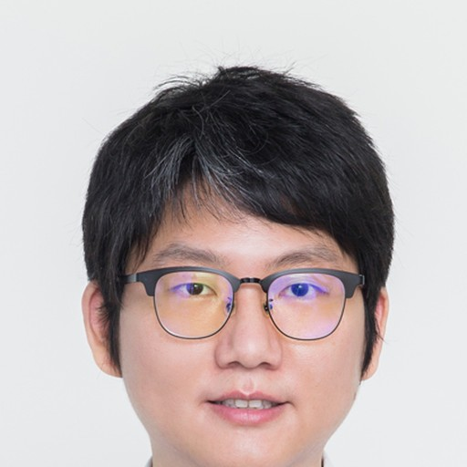

金海
Lab Director
Contributors working across the runtime, Ascend integration, benchmark, documentation, website, and workstation repositories.
Leadership and subproject leads guiding the vLLM-HUST initiative.
Lab Director
Dean

Project Lead
Updated -
Runtime cores and independently maintained projects that directly optimize inference execution.
| Rank | Contributor | Commits | Changed Lines | Added / Deleted | Active Repos | Key Contributions |
|---|
| Rank | Contributor | Commits | Changed Lines | Added / Deleted | Active Repos | Key Contributions |
|---|